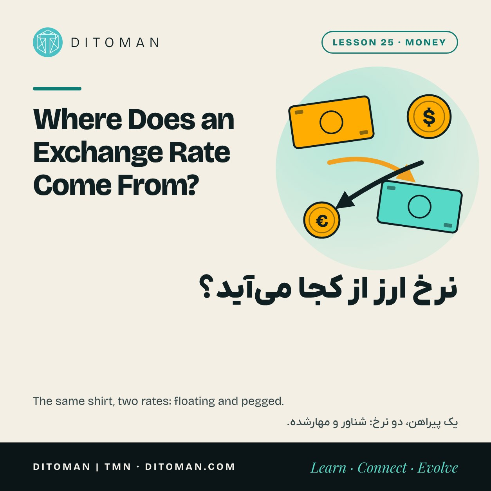
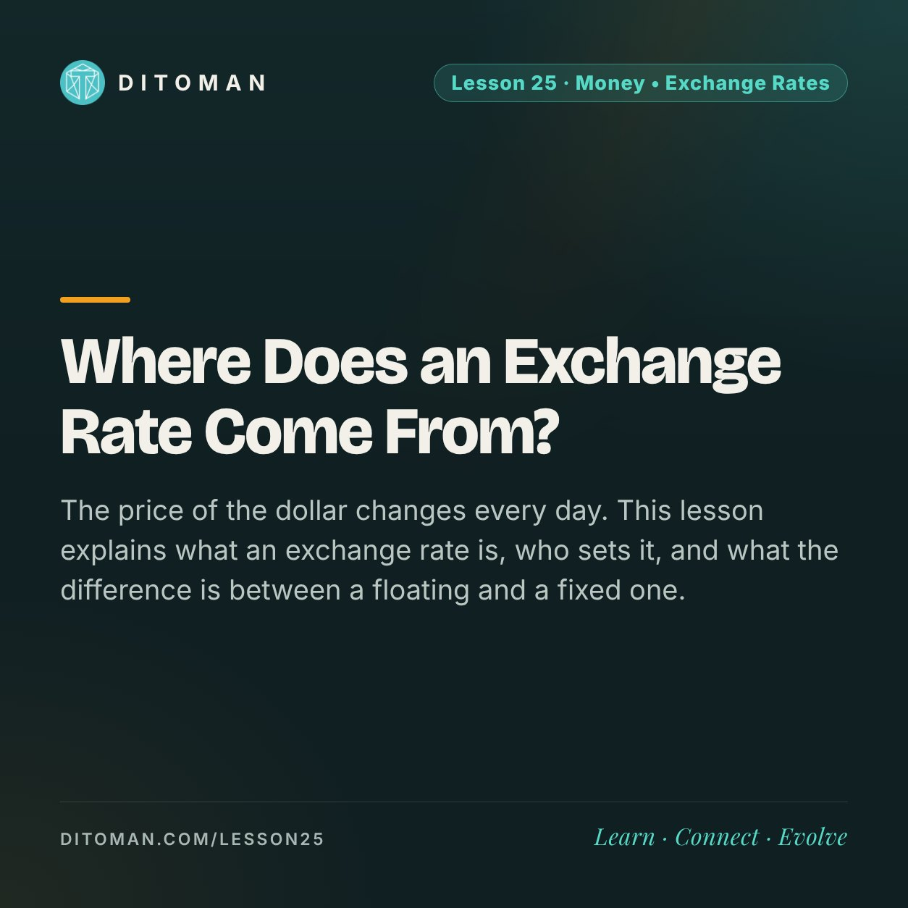

Döviz kuru nereden gelir?
نرخ ارز از کجا میآید؟
Doların fiyatı her gün değişir. Bu ders döviz kurunun ne olduğunu, kimin belirlediğini ve dalgalı ile sabit kur arasındaki farkın ne olduğunu açıklar.
قیمت دلار هر روز عوض میشود. این درس توضیح میدهد نرخ ارز چیست، چه کسی تعیینش میکند و فرق نرخ شناور با نرخ ثابت چیست.
Ders İçeriği
محتوای درس
Dersi İngilizce veya Farsça okuyabilirsiniz.
درس را به فارسی یا انگلیسی بخوانید.
Lizbon'daki bir mağazada bir gömlek 50 euro. Amerika Birleşik Devletleri'nden bir gezgin soruyor: bu dolar olarak ne kadar? Cevap gömleğin üzerinde yazmıyor. Tek bir sayıya, döviz kuruna bağlı.
Bu dersteki kurlar örnek için seçilmiş yuvarlak sayılardır. Bugünün kurları değildir.
01. Döviz kuru nedir
IMF bunu basitçe tanımlar: döviz kuru, bir ülkenin parasının bir başkasının parasıyla ifade edilen fiyatıdır.
1 euro 1,10 dolara eşitse, 50 euroluk gömlek 50 × 1,10 = 55 dolara mal olur. Kur euro başına 1,20 dolara çıkarsa, aynı gömlek 50 × 1,20 = 60 dolara mal olur. Gömlek değişmedi. Para değişti.
| Kur | Euro cinsinden fiyat | Dolar cinsinden fiyat |
|---|---|---|
| 1 euro = 1,10 dolar | 50 | 55 |
| 1 euro = 1,20 dolar | 50 | 60 |
02. Fiyatı kim belirler
Bir ülkenin seçtiği sisteme bağlıdır.
Dalgalı: arz ve talep belirler. Bir para birimini satmak isteyenden daha fazla alıcı varsa fiyatı yükselir. IMF, bir merkez bankasının ani dalgalanmaları yumuşatmak için yine de döviz alıp satabileceğini belirtir.
Sabit (sabitlenmiş): ülke parasını başka bir para birimine ya da bir sepete bağlar. Bazıları sonuna kadar gider: Panama ABD dolarını kullanır ve Hong Kong bir para kurulu işletir.
03. Dalgalı bir kuru ne yönlendirir
Birçok şey arz ve talebi iter: bir ülkenin yurt dışına ne kadar sattığı ve yurt dışından ne kadar aldığı, faiz oranları, enflasyon ve gelecek beklentileri. Beklentiler insanların sandığından daha önemlidir, çünkü tüccarlar yalnızca olanlara değil, olacağına inandıkları şeye göre hareket eder.
04. Sabit kurun ödünleşimi
Sert bir sabitleme ithalatçılara ve gezginlere istikrar verir, ama ülke kendi faiz politikasından vazgeçer, çünkü bağlı olduğu para birimini izlemek zorundadır. Dalgalı bir kur bu özgürlüğü korur, bedeli hareket eden bir kurdur.
IMF ayrıca, kurun sabit ama tam olarak desteklenmediği yumuşak sabitlemelerin kırılgan olduğu ve kalıcı olmadığı eğiliminde olduğu konusunda uyarır.
05. Bu piyasa ne kadar büyük
Dünyanın en büyük finansal piyasasıdır. Uluslararası Ödemeler Bankası, döviz işlemlerinin Nisan 2025'te günde ortalama yaklaşık 9,6 trilyon dolar olduğunu, 2022'ye göre kabaca yüzde 28 daha yüksek olduğunu bildirdi. ABD doları işlemlerin yaklaşık yüzde 89'unun bir tarafındaydı.
Bu yüzden dolar, dünya çapında fiyatlar için ortak bir ölçüt görevi görür.
06. Sıradan insanlar için neden önemli
Örnekte, güçlü bir euro gömleği Amerikalı için pahalılaştırdı ve zayıf bir euro onu ucuzlatıyor. Bir hane için aynı mantık ters yönde çalışır: kendi para biriminiz zayıfladığında ithal mallar ve yurt dışı seyahat pahalılaşır; ithal parçalardan yapılan her şey de öyle. Ders 12, yükselen fiyatların satın alma gücünü nasıl yediğini gösterdi; döviz kuru, onların geldiği yollardan biridir.
Dijital tomanı da içeren canlı kurları fiyatlar sayfamızda izleyebilirsiniz.
Bundan Ne Çıkarmalı
Döviz kuru, bir paranın başka bir paradaki fiyatıdır.
Aynı 50 euroluk gömlek, yalnızca kur değiştiğinde 55 ya da 60 dolara mal olabilir.
Dalgalı kurlar arz ve talebi izler; sabitlenmiş kurlar politikayla bağlanır.
Sert bir sabitleme bağımsız faiz politikasını feda eder.
Döviz alım satımı devasadır ve ABD doları işlemlerin çoğunun bir tarafındadır.
در یک مغازهی لیسبون، یک پیراهن ۵۰ یورو قیمت دارد. مسافری از آمریکا میپرسد: این چند دلار است؟ جواب روی پیراهن نوشته نیست. به یک عدد بستگی دارد: نرخ ارز.
نرخهای این درس عددهای گرد و انتخابی برای مثالاند؛ نرخ امروز نیستند.
۰۱. نرخ ارز چیست
صندوق بینالمللی پول ساده تعریفش میکند: نرخ ارز قیمت پول یک کشور بر حسب پول کشور دیگر است.
اگر ۱ یورو برابر ۱٫۱۰ دلار باشد، پیراهن ۵۰ یورویی ۵۰ × ۱٫۱۰ = ۵۵ دلار میشود. اگر نرخ به ۱٫۲۰ دلار برای هر یورو برسد، همان پیراهن ۵۰ × ۱٫۲۰ = ۶۰ دلار میشود. پیراهن عوض نشده. پول عوض شده.
| نرخ | قیمت به یورو | قیمت به دلار |
|---|---|---|
| ۱ یورو = ۱٫۱۰ دلار | ۵۰ | ۵۵ |
| ۱ یورو = ۱٫۲۰ دلار | ۵۰ | ۶۰ |
۰۲. چه کسی قیمت را تعیین میکند
بسته به نظامی است که کشور انتخاب میکند.
شناور: عرضه و تقاضا تصمیم میگیرند. اگر خریداران یک پول بیش از فروشندگانش باشند، قیمتش بالا میرود. صندوق میگوید بانک مرکزی همچنان ممکن است ارز خارجی بخرد یا بفروشد تا نوسانهای ناگهانی را آرام کند.
ثابت (مهارشده): کشور پولش را به یک پول دیگر یا سبدی از پولها گره میزند. بعضی تا آخر میروند: پاناما دلار آمریکا را به کار میبرد و هنگکنگ با «هیئت ارزی» کار میکند.
۰۳. چه چیزی نرخ شناور را حرکت میدهد
چیزهای زیادی عرضه و تقاضا را هل میدهند: اینکه کشور چقدر به خارج میفروشد و چقدر میخرد، نرخ بهره، تورم و انتظار از آینده. انتظارها بیش از آنچه فکر میکنیم اثر دارند، چون معاملهگران بر اساس آنچه باور دارند رخ میدهد حرکت میکنند، نه فقط آنچه رخ داده.
۰۴. بدهبستان نرخ ثابت
مهار سخت برای واردکنندگان و مسافران ثبات میآورد، ولی کشور سیاست نرخ بهرهی مستقل خود را از دست میدهد، چون باید دنبالهرو پولی باشد که به آن گره خورده. نرخ شناور این آزادی را نگه میدارد، به قیمت نرخی که حرکت میکند.
صندوق هشدار هم میدهد که مهارهای نرم، یعنی نرخ ثابتی که پشتوانهی کامل ندارد، آسیبپذیرند و معمولاً دوام نمیآورند.
۰۵. این بازار چقدر بزرگ است
بزرگترین بازار مالی روی زمین است. بانک تسویههای بینالمللی (BIS) گزارش کرد معاملات ارز در آوریل ۲۰۲۵ بهطور میانگین روزی حدود ۹٫۶ تریلیون دلار بود، تقریباً ۲۸٪ بیشتر از ۲۰۲۲. دلار آمریکا در حدود ۸۹٪ معاملات یک طرف بود.
برای همین دلار مثل یک خطکش مشترک برای قیمتها در دنیا عمل میکند.
۰۶. چرا برای مردم عادی مهم است
در مثال، یورو قویتر پیراهن را برای آمریکایی گرانتر کرد و یورو ضعیفتر ارزانترش میکند. برای یک خانوار منطق همین است، فقط برعکس: وقتی پول خودتان ضعیف میشود، واردات و سفر خارجی گرانتر میشود و هر چیزی هم که از قطعات وارداتی ساخته شود. درس ۱۲ نشان داد افزایش قیمتها چطور قدرت خرید را میخورد؛ نرخ ارز یکی از راههای رسیدنشان است.
نرخهای زنده، از جمله تومان دیجیتال، را در صفحهی قیمتهای ما ببینید.
چه برداشتی کنیم
نرخ ارز قیمت یک پول بر حسب پول دیگر است.
یک پیراهن ۵۰ یورویی میتواند ۵۵ یا ۶۰ دلار باشد، وقتی فقط نرخ عوض شده.
نرخ شناور از عرضه و تقاضا میآید؛ نرخ مهارشده با سیاست گره خورده است.
مهار سخت، سیاست نرخ بهرهی مستقل را فدا میکند.
معاملات ارز بسیار بزرگ است و دلار آمریکا یک طرف بیشترش است.
Birbirine bağlanan iki ders
دو درس مرتبط
Ders 12, yükselen fiyatların satın alma gücünü nasıl aşındırdığını açıklar. Ders 26, bir para biriminin arkasında sıkça duran kurumu gösterir: merkez bankası.
درس ۱۲ توضیح میدهد افزایش قیمتها چطور قدرت خرید را میفرساید. درس ۲۶ نهادی را نشان میدهد که اغلب پشت یک پول ایستاده: بانک مرکزی.
Temel Kavramlar
مفاهیم کلیدی
- Döviz kuru
- Dalgalı kur
- Sabit (sabitlenmiş) kur
- Para kurulu
- Döviz piyasası
- Parasal özerklik
- نرخ ارز
- نرخ شناور
- نرخ ثابت (مهارشده)
- هیئت ارزی
- بازار ارز
- استقلال پولی
Öğrenme Hedefleri
اهداف یادگیری
- Döviz kurunu tanımlayın.
- Verilen bir kurla bir fiyatı dönüştürün.
- Dalgalı kuru sabitlenmiş kurdan ayırın.
- Sert bir sabitlemenin ödünleşimini açıklayın.
- Döviz piyasasının ne kadar büyük olduğunu anlatın.
- نرخ ارز را تعریف کنید.
- با یک نرخ دادهشده قیمت را تبدیل کنید.
- نرخ شناور را از نرخ مهارشده تشخیص بدهید.
- بدهبستان مهار سخت را توضیح بدهید.
- اندازهی بازار ارز را توصیف کنید.
Sınav
آزمونک
Aklınızda ne kaldığını kontrol edin. Yanıt her sorunun altında.
ببین چه چیزی در ذهنت مانده. پاسخ زیر هر پرسش آمده است.
Soru 1
پرسش ۱
1 euro = 1,10 dolar. Bir gömlek 50 euro. Dolar cinsinden fiyatı:
۱ یورو = ۱٫۱۰ دلار. یک پیراهن ۵۰ یورو است. قیمتش به دلار:
A. 55
الف. ۵۵
B. 45
ب. ۴۵
C. 5.5
ج. ۵٫۵
Doğru cevap: A
پاسخ درست: الف
Soru 2
پرسش ۲
Kur euro başına 1,20 dolara çıkıyor. Gömlek artık şu kadar tutuyor:
نرخ به ۱٫۲۰ دلار برای هر یورو میرسد. پیراهن حالا چند دلار است؟
A. 60
الف. ۶۰
B. 55
ب. ۵۵
C. 41.67
ج. ۴۱٫۶۷
Doğru cevap: A
پاسخ درست: الف
Soru 3
پرسش ۳
Dalgalı bir sistemde kuru esas olarak ne belirler?
در نظام شناور، چه چیزی عمدتاً نرخ را تعیین میکند؟
A. Arz ve talep
الف. عرضه و تقاضا
B. Yıllık bir oylama
ب. یک رأیگیری سالانه
C. Gömleğin fiyatı
ج. قیمت پیراهن
Doğru cevap: A
پاسخ درست: الف
Soru 4
پرسش ۴
Sert bir sabitlemede ülke neden vazgeçer?
کشور در مهار سخت از چه چیزی میگذرد؟
A. Bağımsız faiz politikasından
الف. سیاست نرخ بهرهی مستقل
B. Bayrağından
ب. پرچمش
C. İthalatından
ج. واردات
Doğru cevap: A
پاسخ درست: الف
Soru 5
پرسش ۵
BIS'e göre Nisan 2025'te günde yaklaşık ne kadar döviz işlemi yapıldı?
طبق BIS، در آوریل ۲۰۲۵ روزانه حدود چقدر معاملهی ارز انجام شد؟
A. Yaklaşık 9,6 trilyon dolar
الف. حدود ۹٫۶ تریلیون دلار
B. Yaklaşık 96 milyon dolar
ب. حدود ۹۶ میلیون دلار
C. Yaklaşık 1 milyar dolar
ج. حدود یک میلیارد دلار
Doğru cevap: A
پاسخ درست: الف
Kaynaklar
منابع
- IMF, Finance & Development: Temellere Dönüş, döviz kurları, dalgalı ve sabit sistemler
- Uluslararası Ödemeler Bankası: küresel döviz işlemleri Nisan 2025'te günde 9,6 trilyon dolara ulaştı (basın bülteni, 30 Eylül 2025)
Örnekteki euro ve dolar kurları aritmetiği göstermek için seçilmiş yuvarlak sayılardır, güncel kurlar değildir. Piyasa büyüklüğü rakamları BIS'in üç yılda bir yaptığı anketten gelir. Genel açıklama, herhangi bir kurun tahmini değil.
نرخهای یورو و دلار در مثال عددهای گردِ انتخابی برای نشاندادن محاسبهاند، نه نرخهای فعلی. اندازهی بازار از پیمایش سهسالهی BIS است. توضیح عمومی است و پیشبینی هیچ نرخی نیست.
با هم دنبال میکنیمTakipte kal
Yeni dersler önce Ditoman'ın kanallarında duyurulur.
درسهای تازه اول در کانالهای دیتومان معرفی میشوند.